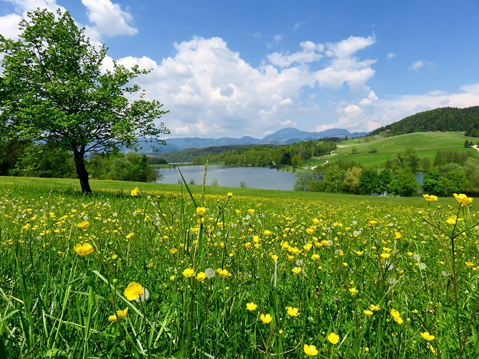

Лето

До чего хорош денек! Веет легкий ветерок. Солнца летнего лучи Так приятно горячи!
Источник
https://stihomaniya.ru/2016/03/chetverostishija-pro-leto.html/
Осень
Закружилась листьев стая И осела у воды. Это ветер заметает Желтой осени следы.
Источник
https://stihomaniya.ru/2016/07/chetverostishija-pro-osen.html/
Зима
На деревьях бахрома
Из снежинок, инея.
Разукрасила зима
Белым небо синее
Источник
https://www.numama.ru/blogs/kopilka-detskih-stihov/chetverostishija-pro-zimu.html